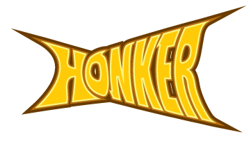

Groove-heavy originals, catchy hooks, and sweaty, danceable improvisation.
Live funk-rock and exploratory jams in Syracuse, NY.
Full show recorded live in Endicott, NY for WBDY 99.5 FM.
Influenced by moe., Phish, Frank Zappa, and Rush, Honker blends tight songwriting with fearless live jams.
Also of: Yolk, Caviar & Grits
Also of: Grateful Upstate Toodleloo
Also of: Randy McStine Trio, Yolk